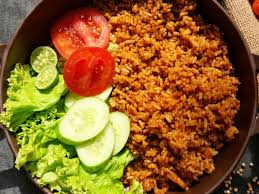

Resep Makanan

Nasi Goreng Jawa


Resep Minuman


Tips Memasak
1. Panaskan Wajan
Pastikan wajan benar-benar panas sebelum memasak agar bahan tidak lengket.
2. Gunakan Bahan Segar
Rasa makanan lebih nikmat jika menggunakan bahan-bahan segar.
3. Cicipi Masakan
Sebelum disajikan, selalu cicipi untuk menyesuaikan rasa bumbu.
JCG PROFILseggbghrdhh

Nama: Vinzent Gabriel Pratama Putra
Tanggal Tempat Lahir: Blitar, 11 Juni 2009
Alamat: Jogosari, Pandaan,Jawa Timur